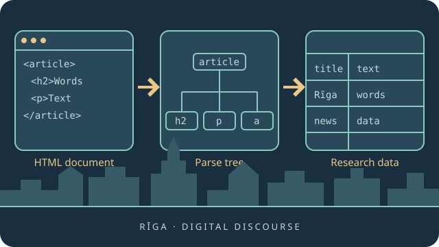

HTML · structure
A markup language describing headings, paragraphs, links, tables and other elements. It provides document structure and metadata, not a programming language.
Technical week 05 · Version 3 · 25 November 2026
From the Web to Words — turning web documents into reproducible research data.
90-minute core · optional refreshers and advanced reference · Digital Humanities

Distinguish retrieval, parsing, extraction and serialization; navigate document trees; extract records with missing fields; export JSON and CSV; explain the effects of acquisition on discourse analysis.
Prerequisites: text processing, JSON and APIs, Python lists and dictionaries. See teaching notes. The browser uses synthetic local examples, not empirical observations. Actual Python runs in Colab.
Version 3: Expanded technology explanations and optional Selenium bonus with dynamic archive sandbox. Follow the numbered 90-minute core during class; expandable refreshers and optional labs are for revision and independent study.
Loading local fixtures…
01 · 5 minutes
HTTP transfers bytes; decoding produces text. Both JSON and HTML can be Python strings before parsing. JSON is a data interchange format, HTML describes documents. APIs may return HTML and web pages may embed JSON.
| Concept | JSON | HTML |
|---|---|---|
| Parser | json.loads(text) | BeautifulSoup(text, "html.parser") |
| Parsed representation | dict/list/scalar | Tree of tags and text nodes |
| Navigation | Keys and indices | Elements and selectors |
| Output | Python records | Python records |
Browser laboratory · JavaScript, not Python
Workflow: retrieve → decode → parse → extract → transform → serialize. Parsing is not downloading: saved text can be parsed offline.
Core concept · web development refresher
You have already met these technologies in web development. From a scraping perspective, the important question is not how to build an attractive site, but where the information actually lives. A browser retrieves resources, parses markup, applies styling and executes scripts. These are related but distinct operations.
A markup language describing headings, paragraphs, links, tables and other elements. It provides document structure and metadata, not a programming language.
A stylesheet language describing how selected elements look. Its selector syntax is also useful independently of styling when finding elements for extraction.
A programming language that can respond to events, request data, create or remove elements and update the browser's document.
The DOM (Document Object Model) is the browser's object representation of the document, not the original HTML string. CSS can hide text that remains in the DOM; JavaScript can change the DOM after the initial HTML arrives. CSS-generated content and rendered layout are not generally part of the parsed HTML text.
Interactive refresher
Toggle styling and a local JavaScript update. The original source does not change; the current DOM does. This laboratory performs real DOM operations with fixed, invented text. It does not contact another server.
Bibliotēka saglabā kultūras mantojumu.
| Technology | Role | Why it matters |
|---|---|---|
HTML | Markup language | Elements, attributes and text. |
CSS | Stylesheet language | Selectors locate elements, styles change presentation. |
JavaScript | Programming language | Can change the DOM or retrieve data. |
DOM | Document object representation | Current structure can differ from received HTML. |
HTTP | Communication protocol | Transfers documents and other resources. |
JSON | Data interchange format | Often carries data used by JavaScript. |
02 · 10 minutes
An opening tag, text content and closing tag make up this example element.
Not every element has a closing tag: void elements such as <img> and <br> are exceptions. A node is more general than an element: text and comments are also nodes. In a tree, a child is one level down; a descendant can be any depth; siblings share a parent. These relationships become selector rules.
| Element | Meaning | Research use |
|---|---|---|
<article> | Self-contained composition | News and blog records |
<main> | Principal content | Avoid peripheral content |
<section> | Thematic subdivision | Document structure |
<h1>–<h6> | Headings | Titles and hierarchy |
<p> | Paragraph | Corpus text |
<a> | Hyperlink | References and networks |
<time> | Time or date | Temporal metadata |
<div> | Generic container | Repeated blocks |
<span> | Generic inline container | Labels and authors |
<ul>, <li> | Lists and items | Categories and tags |
<table> | Tabular data | Records |
<nav>, <footer> | Navigation and footer | Potential boilerplate |
Semantic markup provides clues, not guarantees. Many sites use nested divs or misleading class names; inspect the actual source and test representative pages.
<article class="news culture" id="article-123" data-category="literature">
<h2>Latvian literature online</h2>
<time datetime="2026-11-25">25 November 2026</time>
<a href="/articles/123">Read more</a>
</article>| Attribute | Meaning |
|---|---|
id | Document identifier, expected unique within a page |
class | Space-separated class tokens; may encode structural roles |
data-* | Application-specific metadata |
datetime | Machine-readable time/date |
href | Link destination |
lang | Declared language; may be inherited from ancestors |
src | Resource location |
alt | Alternative text for an image |
Attributes are claims made by the page author, not automatically reliable research metadata. For example, a date may refer to an update, not the original publication.
A tag is markup such as <p>. An element includes tags, attributes and content. Attributes such as class="news" and href="/articles/123" describe elements; text nodes hold content. Nested elements have parents, children and descendants.
Browser laboratory · JavaScript, not Python
Choose an element of the synthetic Latvian article fixture.
View Source shows original markup; Developer Tools → Elements shows the current browser DOM, potentially modified by JavaScript; Network shows requests and responses. BeautifulSoup builds its own tree, not the browser's live DOM.
from bs4 import BeautifulSoup
soup = BeautifulSoup(html, "html.parser")
print(soup.find("article").prettify())Core concept · Python technology
Beautiful Soup is a Python library for navigating, searching and modifying parsed HTML or XML. Its installable package is beautifulsoup4, its import name is bs4, and BeautifulSoup is the class we instantiate. It is not an HTTP client, browser, crawler or JavaScript runtime.
# If needed, in a Jupyter or Colab cell:
%pip install beautifulsoup4
from bs4 import BeautifulSoup
html = '<p class="intro">Rīga</p>'
soup = BeautifulSoup(html, "html.parser")
paragraph = soup.find("p")
print(type(paragraph).__name__)
print(paragraph.get_text())Think of the scraping pipeline as a sequence of representations. A response object is not a string; an HTML string is not a parsed tree; a Tag is not the final research record.
| Stage | Operation | Output |
|---|---|---|
requests.get(url) | Retrieve resource | Response object |
response.text | Decode response body | str |
BeautifulSoup(html, ...) | Parse document | BeautifulSoup object |
find / select | Locate elements | Tag or collection |
get_text / get | Extract values | str, list, None, etc. |
list / dict | Build dataset | Python records |
json / pandas / csv | Serialize or analyse | JSON, DataFrame, CSV |
Interactive refresher
Choose an expression. These are fixed illustrative Python results, checked against Beautiful Soup 4.14.3, not Python executed by your browser. Identical printed values may have different types and available methods.
| Type | Meaning |
|---|---|
str | Original or extracted ordinary Python string |
BeautifulSoup | Document root and navigation interface |
Tag | An individual element with attributes and children |
NavigableString | A text node attached to the parse tree (subclass of str) |
ResultSet | List-like collection returned by find_all and current select |
NoneType | No match |
dict / AttributeDict | A research record is a dict. In recent Beautiful Soup versions, attributes use AttributeDict (a dict subclass); earlier releases may use dict. |
list | Collection of values or records |
| Parser | Characteristics |
|---|---|
html.parser | Built into Python; course default |
lxml | External dependency; generally fast |
html5lib | External dependency; implements HTML5 parsing rules |
Malformed HTML can produce different trees with different parsers. Record the parser and library versions when reproducibility matters. Try this optional Colab experiment (install lxml and html5lib if needed):
from bs4 import BeautifulSoup
broken = "<a></p>"
for parser in ("html.parser", "lxml", "html5lib"):
print(parser, BeautifulSoup(broken, parser).prettify())Search methods return elements, not their text. Use find for convenient Python filters and select for CSS selectors. The keyword class_ has a trailing underscore because class is a reserved Python keyword.
| Task | Beautiful Soup search | CSS selector |
|---|---|---|
First paragraph | find("p") | select_one("p") |
All paragraphs | find_all("p") | select("p") |
First news element | find(class_="news") | select_one(".news") |
Find ID | find(id="archive") | select_one("#archive") |
All news articles | find_all("article", class_="news") | select("article.news") |
Links with href | find_all("a", href=True) | select("a[href]") |
For a link <a href="/articles/123">Lasīt vairāk</a>, these operations have distinct results:
| Expression | Result |
|---|---|
link.name | a |
link.attrs | {'href': '/articles/123'} |
link.get("href") | /articles/123 |
link["href"] | /articles/123 |
link.get_text() | Lasīt vairāk |
str(link) | <a href="/articles/123">Lasīt vairāk</a> |
Always check whether an element was found before calling its methods. For an existing Tag, tag.get("href") returns None by default if absent; indexing tag["href"] raises KeyError. Class attributes typically return a list of class tokens. In Beautiful Soup 4.14.3, tag.attrs is an AttributeDict (a dict subclass); older versions may return a plain dict. Use dict(tag.attrs) if you specifically need a plain dictionary.
link = soup.select_one("a[href]")
if link is not None:
print(link.get("href"))
else:
print("No matching link")Interactive refresher
Inline markup can occur between words or inside a word. Explore the effects of separator and strip using two fixed text-node examples. This is a browser model of Beautiful Soup's get_text on these examples, not a general Python implementation.
Spaces shown as ·; newlines remain line breaks.
get_text(" ", strip=True) is often helpful, but not universally correct. Adding separators inside a word introduces artificial token boundaries. Preserve source and document text normalization decisions.
03 · 15 minutes
In a CSS rule, the selector describes which elements are affected and the declaration block specifies appearance. Scraping uses the selector alone, not the curly braces or style declarations.
article.news p {
color: darkgreen;
font-size: 18px;
}paragraphs = soup.select("article.news p")article.news means the article itself has class news; article .news means a descendant inside an article has class news. A single space changes the meaning. Classes can have multiple tokens: .news.culture requires both. An ID selector such as #article-123 targets the ID attribute.
| Selector | Meaning |
|---|---|
* | Any element |
p | Element with tag name p |
.news | Has class token news |
#article-123 | Has the given ID |
article.news | Article with class news |
article .news | Descendant with class news |
.news.culture | Has both class tokens |
| Selector | Relationship |
|---|---|
article p | All descendant paragraphs, any depth |
article > p | Direct paragraph children |
h2 + p | Paragraph immediately following an h2 sibling |
h2 ~ p | Any later paragraph sibling of h2 |
The richer fixture below contains nested and direct paragraphs, plus an advertisement and an English article. Choose it in the playground. For focused counts, scope to #article-123 (4 descendant paragraphs, 2 direct paragraphs, 1 adjacent sibling paragraph, 2 subsequent sibling paragraphs).
Interactive refresher
Explore four relationships inside the same article, using real querySelectorAll on the nested teaching fixture. A check mark identifies each matching paragraph.
Loading nested fixture…
| Selector | Meaning |
|---|---|
a[href] | Has href |
a[href="/about"] | Exact attribute value |
a[href^="/articles/"] | Starts with /articles/ |
a[href$=".pdf"] | Ends with .pdf |
a[href*="culture"] | Contains culture |
[lang="lv"] | Explicitly declares Latvian |
[data-category="news"] | Custom metadata matches |
Attribute selectors compare markup values, not the resolved URL or the inherited language. A relative link ending in .pdf is not proof that the response is actually PDF; check media type if retrieving it.
| Selector | Meaning |
|---|---|
li:first-child | List item that is the first child |
li:last-child | List item that is the last child |
li:nth-child(2) | List item that is the second element child |
p:nth-of-type(2) | Second p among siblings of its type |
article:not(.advertisement) | Exclude ads |
article:has(h2) | Article containing an h2 |
h1, h2, h3 | Union of matching selectors |
Support for advanced selectors depends on browser and Soup Sieve versions. Browser state such as :hover and pseudo-elements such as ::before are not ordinary parsed HTML elements. Inspect and test selectors in the intended environment.
Interactive refresher
Introduce one wrapper around the two direct paragraphs of the first synthetic article. Compare a position-sensitive selector with a semantic descendant selector.
Neither selector is immune to redesign. A meaningful selector better expresses the intended corpus boundary; still validate record counts and fields.
Choose the nested fixture in the playground and try to select PDF links, links beginning with /articles/, explicitly English elements and non-advertisement articles.
a[href$=".pdf"] → 1; a[href^="/articles/"] → 2; [lang="en"] → 1; article:not(.advertisement) → 2.
find() and select_one() return the first match or None. find_all() and select() return collections. Selectors encode structural assumptions.
| Selector | Meaning |
|---|---|
p | All paragraphs |
.news | Class news |
#listings | ID listings |
article p | Descendant paragraphs |
article > p | Direct paragraph children |
article.news | Articles with class news |
a[href] | Links with href |
Browser laboratory · JavaScript, not Python
Use the richer archive fixture for attributes, siblings and nested structure.
Use presets or enter any browser CSS selector. Browser and BeautifulSoup selectors overlap but are not identical.
for h in soup.select("article.news > h2"):
print(h.get_text(" ", strip=True))
link = soup.select_one("a[href]")
if link is not None:
print(link.get("href"))Link text differs from its href. Resolve relative paths with urllib.parse.urljoin and the actual document URL. Missing elements are not empty strings.
04 · 10 minutes
import requests
response = requests.get(url, timeout=(5, 15))
response.raise_for_status()
print(response.status_code, response.url)
print(response.headers.get("Content-Type"))
html = response.textresponse.content contains bytes; response.text contains decoded text. Check status, media type and final URL. HTTP 200 does not guarantee desired content.
Browser laboratory · JavaScript, not Python
Simulation only; no request is sent.
The optional live notebook demonstration uses Quotes to Scrape. No live SS.com request is required.
Refresher · optional exploration
Static content is already in the received HTML. A dynamic page may initially contain a shell; JavaScript can request JSON, transform records and insert new elements. The HTML response and current browser DOM are then different. Beautiful Soup does not run JavaScript.
Interactive refresher
A fixed local example models an API response. Press Load data to execute real DOM updates. The JSON is embedded in this lesson's JavaScript; this is not a live API request.
| Task | Browser JavaScript | Beautiful Soup |
|---|---|---|
First match | document.querySelector("p") | soup.select_one("p") |
All matches | document.querySelectorAll("p") | soup.select("p") |
Text | element.textContent | tag.get_text() |
Attribute | element.getAttribute("href") | tag.get("href") |
querySelectorAll returns a static NodeList of browser elements, not a Python list. textContent and get_text are analogous, not identical: Beautiful Soup can control separators and stripping, and parser behaviour may differ.
On a desktop browser (Chrome, Edge or Firefox), open this lesson. The exact panel names may vary.
.html.txt fixture requests. Inspect status, response and content type. These are actual local resource requests; the dynamic demo above is simulated.document.querySelectorAll("article")
document.querySelectorAll("#tech-preview p").lengthBefore and after toggling the technology demo, the scoped paragraph count should be one and two respectively. Browser Console operates on the course page, whereas the selector playground operates on a separate parsed fixture.
05 · 15 minutes
Inspect one quotation, extract a dictionary, then loop through each container. Do not zip independent lists of authors and quotations: missing fields can misalign them.
def text_or_none(tag):
if tag is None:
return None
return tag.get_text(" ", strip=True) or None
records = []
for quote in soup.select(".quote"):
text = text_or_none(quote.select_one(".text"))
author = text_or_none(quote.select_one(".author"))
if text is None or author is None:
continue
records.append({"text": text, "author": author,
"tags": [t.get_text(" ", strip=True)
for t in quote.select(".tag")]})Browser laboratory · JavaScript, not Python
Five invented quotation blocks, one missing an author, another without tags or author link.
| Text | Author | Tags | Author href | Status |
|---|
Missing values are null; no tags is an empty array. CSV encodes arrays as JSON text and protects leading spreadsheet formula characters.
Default policy: four valid records and one skipped. Preserve Unicode and provenance; dataset creation time is not source retrieval time. Synthetic links are unresolved and have no actual source URL.
06 · 10 minutes
pandas.read_html() returns a list of DataFrames. Select by ID or verify expected columns rather than fragile positions. Passing a string through StringIO avoids network access.
from io import StringIO
import pandas as pd
tables = pd.read_html(StringIO(html))
listings = pd.read_html(StringIO(html),
attrs={"id": "listings"})[0]
listings["Price per m2"] = listings["Price EUR"] / listings["Area m2"]Browser laboratory · JavaScript, not Python
These listings are synthetic, not current prices. The historical Āgenskalns CSV offers authentic commercial discourse, with possibly truncated descriptions. Do not scrape the live site in the core lesson.
07 · 10 minutes
Selectors establish corpus boundaries. Menus, link labels and footers can distort word frequencies. Compare corpus definitions using the same Latvian article fixture.
Browser laboratory · JavaScript, not Python
Browser tokenization uses NFC, lowercase and letter sequences; Python casefold differs for some languages. Word forms are not lemmas or meanings.
import re
import unicodedata
from collections import Counter
text = " ".join(p.get_text(" ", strip=True)
for p in soup.select("article p"))
tokens = re.findall(r"[^\W\d_]+",
unicodedata.normalize("NFC", text).casefold())
print(Counter(tokens).most_common(10))Discuss sampling bias, missing records, attribution, boilerplate and representativeness. Synthetic data tests a method, not an empirical hypothesis.
08 · 15 minutes
Select headings, paragraphs and href links.
article h2: 2; article p: 2; a[href]: 1.
In Colab, create dictionaries with title, text and href.
Scope to each article; second has no link, use None.
Change required fields; download JSON and CSV.
Default: 4 retained, 1 skipped. Require tags: 3 retained. Keep incomplete: all 5.
Compare headings + paragraphs against all regions.
15 tokens versus 19 tokens. Added boilerplate changes the corpus.
Optional: analyse evaluative vocabulary in archived Āgenskalns descriptions. Pagination and dynamic websites are optional notebook extensions.
Stored only in this browser, not an assessment record.
Version 3 · Optional bonus · 30–45 minutes
What if the browser displays data absent from the HTML response?
Independent study after the 90-minute core, not required for core assessment. Revisit the Version 2 dynamic content demonstration first if needed.
Requests retrieves an HTTP response. Beautiful Soup parses HTML or XML. Selenium controls a real browser through WebDriver, allowing the browser to run JavaScript and interact with the interface. Selenium is not a replacement for Beautiful Soup: one obtains the browser state and the other can parse a snapshot. Browser automation is generally heavier and slower.
| Capability | Requests + Beautiful Soup | Selenium |
|---|---|---|
| HTTP retrieval | Yes | Browser navigation |
| Markup parsing | Beautiful Soup tree | Browser DOM |
| JavaScript execution | No | Yes, in browser |
| CSS selectors | Yes | Yes |
| Click, type, wait | No browser interaction | Yes |
| Screenshots | No | Yes |
| Typical use | Static HTML | Interactive pages |
| Resource cost | Lower | Higher |
Static: HTTP → HTML string → Beautiful Soup → records.
Browser: WebDriver → browser → JavaScript + DOM → WebElements → records.
Hybrid: WebDriver → browser → current DOM serialization → Beautiful Soup → records.
API: permitted JSON → Python list/dict → records.
Nine synthetic titles, zero record elements in initial HTML. Load collection genuinely fetches archive.json, waits approximately 900 ms and inserts three records. Load more reveals the next three from cached data. Open Network, reload, click Load collection and inspect the JSON response. Unlike Version 2, this is a real same-origin fetch.
import requests
from bs4 import BeautifulSoup
PAGE_URL = "https://valrcs.github.io/Digital_Discourse_ETH713_Fall_2020/playground/dynamic-archive/index.html"
response = requests.get(PAGE_URL, timeout=20)
response.raise_for_status()
soup = BeautifulSoup(response.text, "html.parser")
print(len(soup.select("article.archive-record"))) # 0Expected result: 0. This is not a selector error; the response contains the shell but not the later article nodes.
python -m pip install selenium beautifulsoup4 requestsIn Jupyter or Colab use %pip install. Selenium Manager normally discovers or acquires a matching driver if the environment permits. A Python package alone is not a browser. Managed or offline environments may need a compatible installed browser and driver. Headed mode is useful locally; headless mode is appropriate for servers. Colab browser availability changes and is not guaranteed.
from selenium import webdriver
from selenium.webdriver.common.by import By
from selenium.webdriver.support.ui import WebDriverWait
from selenium.webdriver.support import expected_conditions as EC
options = webdriver.ChromeOptions()
# Uncomment for headless operation:
# options.add_argument("--headless=new")
driver = webdriver.Chrome(options=options)
try:
driver.get(PAGE_URL)
print(driver.title, driver.current_url)
finally:
driver.quit()Python bindings send WebDriver commands through a driver to Chrome, Firefox or Edge. Navigation, current URL and title are browser operations. Use try/finally and driver.quit() to release the entire session. The following snippets assume a live driver within such a session; the companion notebook has complete runnable examples.
| Task | Beautiful Soup | Selenium |
|---|---|---|
| First match | soup.select_one("p") | driver.find_element(By.CSS_SELECTOR, "p") |
| All matches | soup.select("p") | driver.find_elements(By.CSS_SELECTOR, "p") |
| Object | Tag | WebElement |
| Text | tag.get_text() | element.text |
| Attribute | tag.get("href") | element.get_dom_attribute("href") |
| Click | Not available | element.click() |
| Type | Not available | element.send_keys(...) |
Selenium .text represents rendered visible text, while Beautiful Soup extracts parsed text nodes. get_dom_attribute reads markup attributes; get_property reads DOM properties. find_element raises NoSuchElementException when absent, whereas find_elements returns an empty list. Prefer By.CSS_SELECTOR and By.ID; By.XPATH, By.TAG_NAME, By.CLASS_NAME (one class token) and By.LINK_TEXT are alternatives.
driver.get() does not guarantee that asynchronous content is available. Explicit waits poll until a condition succeeds or a timeout occurs. Presence means a node exists; visibility means it is visible; clickable means visible and enabled, not that no overlay can obstruct it. presence_of_all_elements_located requires a nonempty matching list, not a known total. Wait for the expected state.
Interactive model · not Python execution
Idealized timing; actual WebDriver waits poll periodically.
wait = WebDriverWait(driver, 10)
wait.until(EC.element_to_be_clickable((By.ID, "load-collection"))).click()
wait.until(lambda d: len(d.find_elements(
By.CSS_SELECTOR, "article.archive-record")) == 3)Wait for three records, a known count in this sandbox. Elsewhere use a reliable completion marker or meaningful state. Do not mix implicit and explicit waits or blindly retry.
selector = "article.archive-record"
before = len(driver.find_elements(By.CSS_SELECTOR, selector))
wait.until(EC.element_to_be_clickable((By.ID, "load-more"))).click()
wait.until(lambda d: len(d.find_elements(By.CSS_SELECTOR, selector)) == before + 3)search = driver.find_element(By.ID, "archive-search")
search.send_keys("Rīg")
search.clear()
from selenium.webdriver.support.ui import Select
Select(driver.find_element(By.ID, "archive-category")).select_by_visible_text("Research")Filters apply only to loaded records; clear search and set All before counting a complete dataset. Search is Unicode-normalized case-insensitive substring matching, not lemmatization. Rīg matches Rīgā and Rīgas. Re-locate elements after DOM updates. Bound pagination and stop if the button is disabled or progress stops.
soup = BeautifulSoup(driver.page_source, "html.parser")
records = []
for article in soup.select("article.archive-record"):
records.append({
"id": article["data-id"],
"title": article.select_one("h2").get_text(strip=True),
"year": int(article["data-year"]),
"category": article["data-category"],
})page_source serializes the current document; it need not equal the original HTTP response bytes. In this sandbox it contains the inserted articles. Iframes, shadow DOM and canvas require special handling. Verify fields and counts.
from urllib.parse import urljoin
json_url = urljoin(PAGE_URL, "archive.json")
response = requests.get(json_url, timeout=20)
response.raise_for_status()
records = response.json()
print(len(records)) # 9Interactive model · not Python execution
Expected results on the sandbox, with no filters. The browser approach loads one batch only.
Use Selenium to learn browser-dependent acquisition, not to replace a simpler public resource. The notebook compares the complete hybrid dataset with JSON.
| Symptom | Likely cause | Action |
|---|---|---|
| NoSuchElementException | Absent element or incorrect selector | Inspect DOM; wait for condition |
| TimeoutException | Condition never true | Inspect selector, filters, loading state |
| StaleElementReferenceException | Element replaced | Locate again |
| ElementClickInterceptedException | Obstruction | Inspect UI |
| SessionNotCreatedException | Browser/driver setup | Check versions and Selenium Manager |
| Zero records | Data not loaded or filters active | Compare source, DOM, Network |
| Browser remains open | Missing cleanup | Use quit in finally |
Document source URL, retrieval time, browser and Selenium versions, selectors, actions, filters, counts and failures. Preserve original responses and DOM snapshots where appropriate. Respect authorization, copyright, privacy and rate limits; do not circumvent authentication, paywalls or CAPTCHAs. These examples are invented and not evidence.
{
"source_kind": "synthetic_teaching_archive",
"method": "selenium_then_beautifulsoup",
"actions": [
"open archive",
"load collection",
"load more",
"wait for six records"
],
"selector": "article.archive-record",
"records_extracted": 6
}Reference · independent study